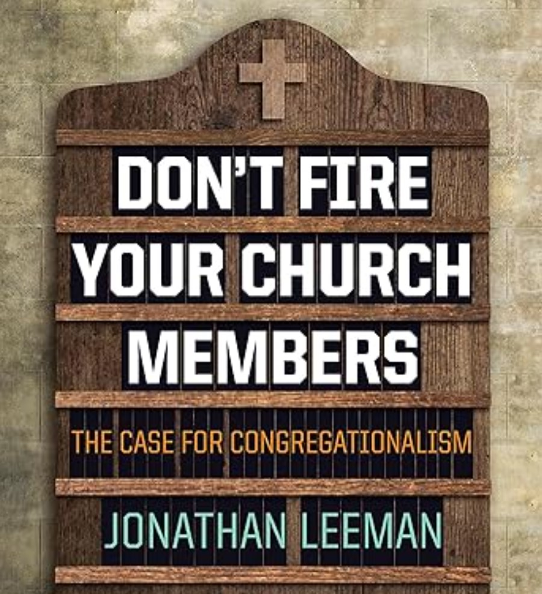

Don't Fire Your Church Members (Book Review)
November 16, 2024

Who exercises the authority of Christ on earth? Not the Pope, not a bishop, not a presbytery, and not an elder board. The gathered local church exercises the authority of Christ on earth.
Don’t Fire Your Church Members by Jonathan Leeman addresses many of the common misconceptions about congregationalism and presents a positive case from Scripture for an elder-led, congregationally-ruled polity. Unlike many traditional discussions about church polity, Leeman centers his defense of congregationalism not on NT proof-texts but on the biblical storyline. Beginning with Adam’s commission (and failure) as priest-king in Eden, tracing through the Mosaic (priestly) and Davidic (kingly) covenants, Leeman argues that the new covenant makes
every single Christian a priest-king, called to tend and rule over the temple of God, the church. This means that each Christian is commissioned, equipped, and commanded to identify “the
what and
who of the gospel.” In other words, the church should be congregationally ruled. To take away the ruling authority of the congregation is to, in essence, fire the members of the church.
Leeman then examines some of the classic NT texts for congregationalism (Matt 16, 18; 1 Cor 5; Gal 1; etc.). This is followed by a chapter on the relationship between congregational and elder authority. Ultimately, Leeman argues that elders have the authority to
lead by guiding and equipping the congregation to exercise their
rule. Furthermore, as a general principle, the authority of the congregation is not unlimited: it is focused on guarding the
who and
what of the gospel (not, for example, deciding whether to purchase a photocopier). Finally, Leeman discusses how congregationally-ruled churches should relate to other churches.
Leeman’s most significant and most helpful contribution in this work is taking the covenantal storyline of the Bible and applying it to the question of congregationalism. Taking NT proof-texts by themselves, one might be excused for thinking that the NT does not prescribe a specify church polity. However, the covenantal trajectory of Scripture that commissions each believer as a priest and king clearly points to a congregationalist polity, as Leeman helpfully demonstrates. Although that is Leeman’s strongest argument for congregationalism, his explanation of Matthew 16 and 18 is also very helpful.
Furthermore, Leeman does something which I haven’t seen others do, which is argue from Matthew 18:19–20 that the authorization to exercise the keys rests with the
gathered congregation. This raises some red flags when it comes to multi-service congregational churches, as well as the more recent trend of multi-site churches.
In the chapter about the role of elders, Leeman makes it very clear that although he believes that the final ruling authority rests with the congregation, a healthy congregational church must also have strong leadership with the elders. Leeman’s vision for congregational polity is a helpful corrective against some of the stereotypes when it comes to congregationalism, where the church becomes an unrestrained democracy where nothing ever gets done. Leeman sees the authority of the congregation more like
guardrails, within which the elders should have freedom to lead and teach the church. The congregation, despite having their own authority, is also called to submit to and obey the elders of the church.
Finally, Leeman’s discussion about Acts 15 was very helpful for me to understand the arguments of proponents of connectional polity and their weaknesses. I agree with his understanding of the Jerusalem “council,” which is that 1) it was a unique event in redemptive history where apostolic and not ecclesiological authority was exercised; 2) churches are bound to the council’s decision because it is Spirit-inspired Scripture; and 3) when taken in isolation, it
might suggest a universal ecclesiological order (like the Roman Catholic Church claims to be) but it does
not suggest a regional connectional order as the presbyterians claim (the decision is binding for
all churches).
Purchase on
Amazon
Leeman, Jonathan.
Don’t Fire Your Church Members: The Case for Congregationalism. Nashville, TN: B&H Academic, 2016.